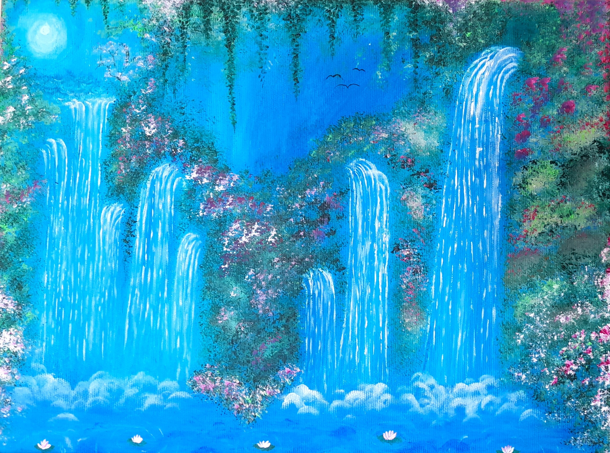
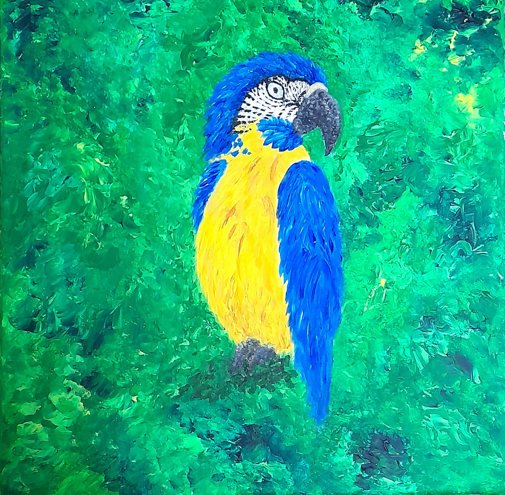
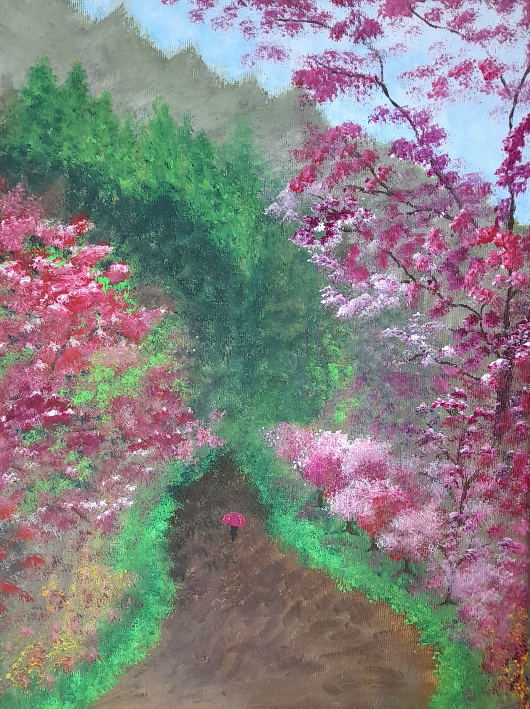
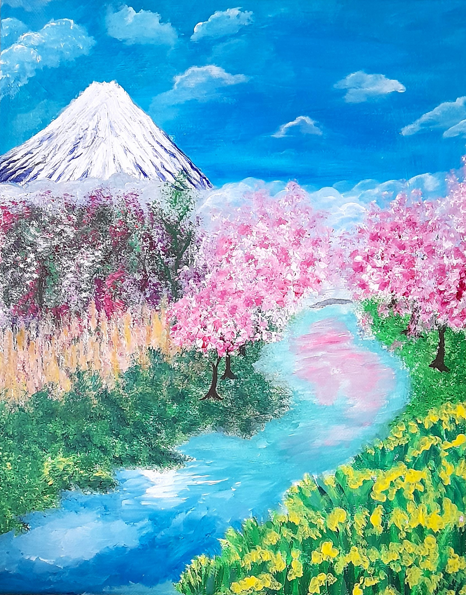
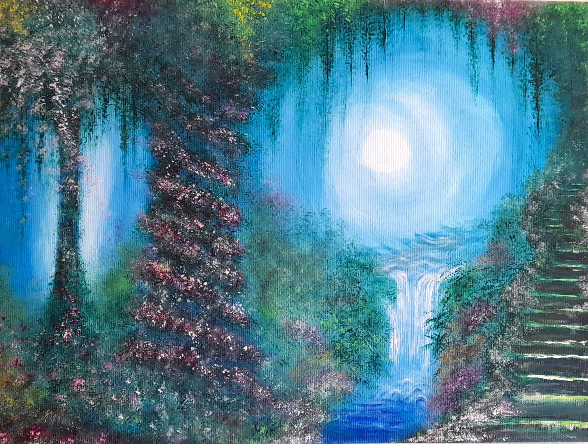
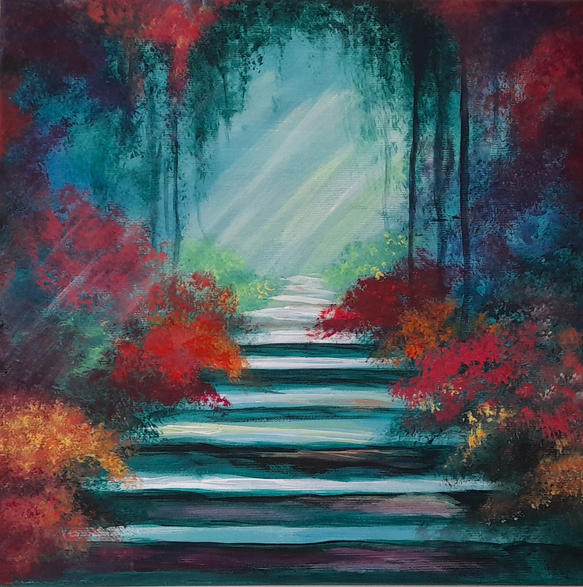
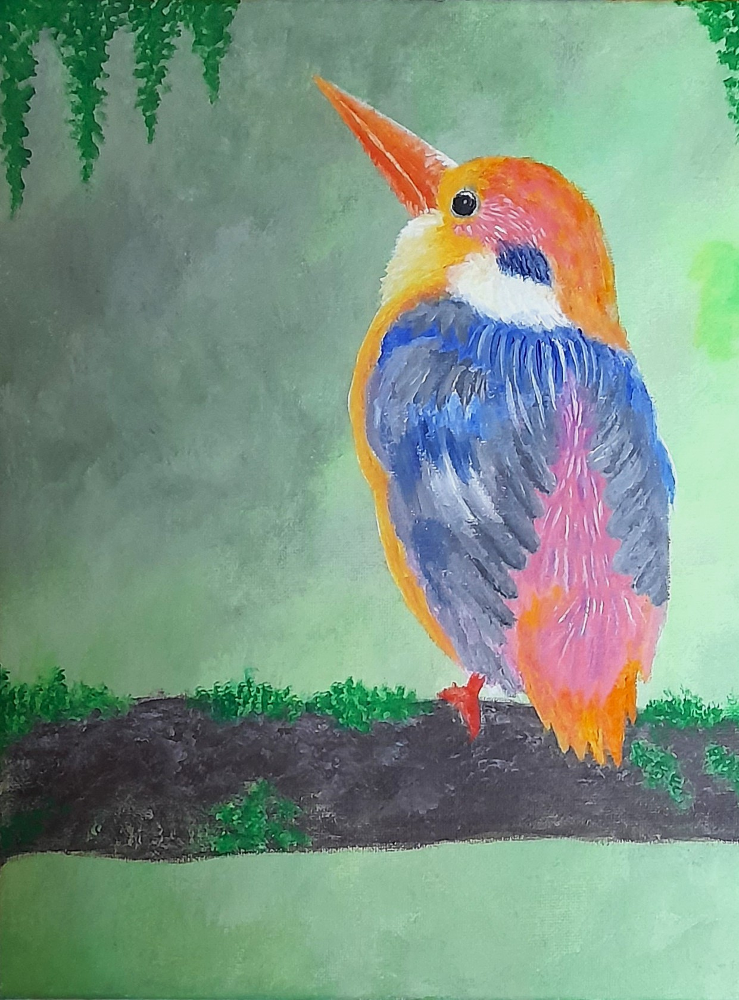
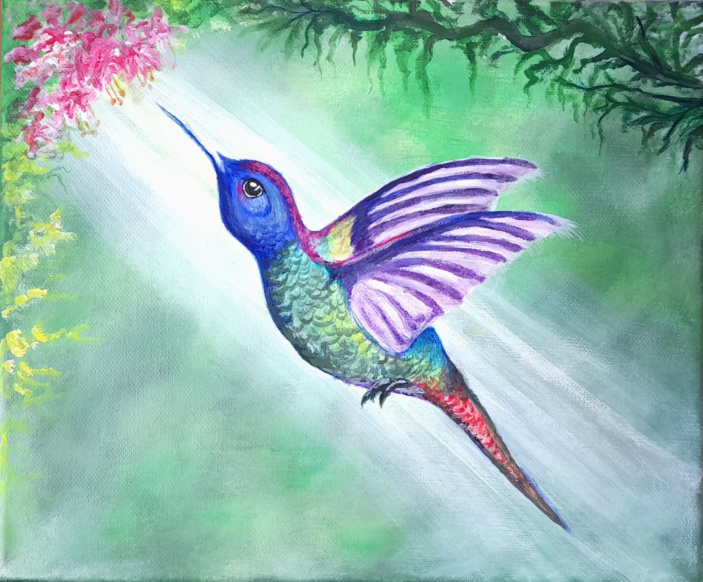
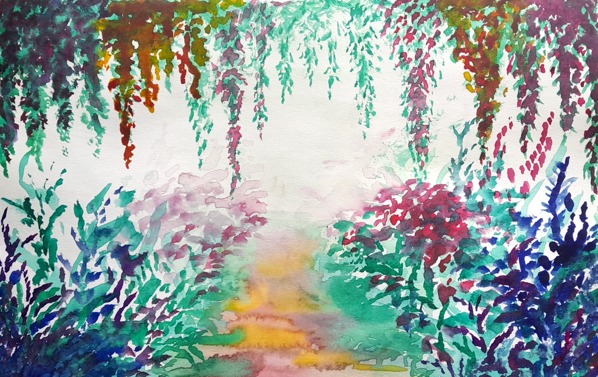

Witam na mojej stronie
Nazywam się Patrycja Ogórek i malarstwo od niedawna jest moją pasją. Poniżej przedstawiam kilka swoich prac. Głównie maluję farbami akrylowymi. Jedna ostatnio postanowiłam spróbować innej techniki, akwareli, w której to jest namalowany ostatni obraz.
"Wodospad"
"Niebiesko-żółta Ara"
"Deszczowa Japonia"
"Góra Fuji"
"Magiczny Las"
"Ścierzka wśród drzew"
"Rajski ptak"
"Koliber"
"Zaczarowany ogród"
